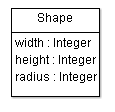
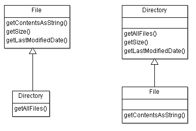
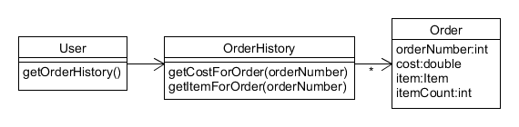
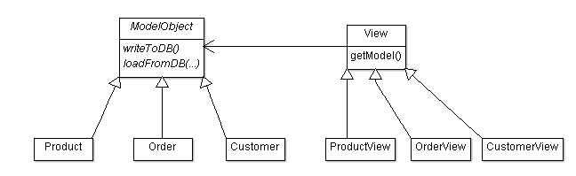
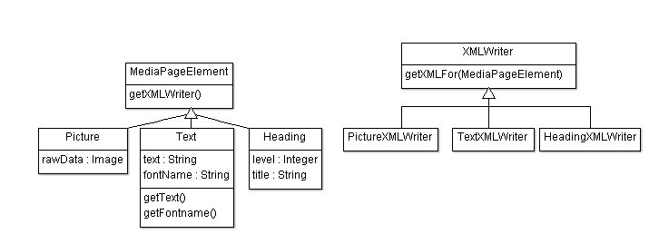
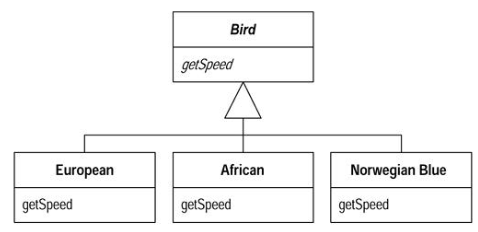
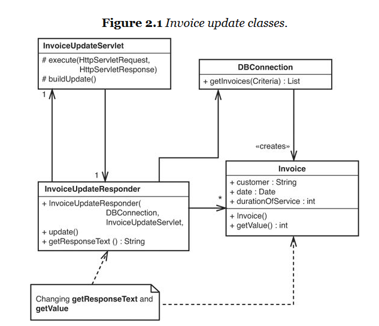
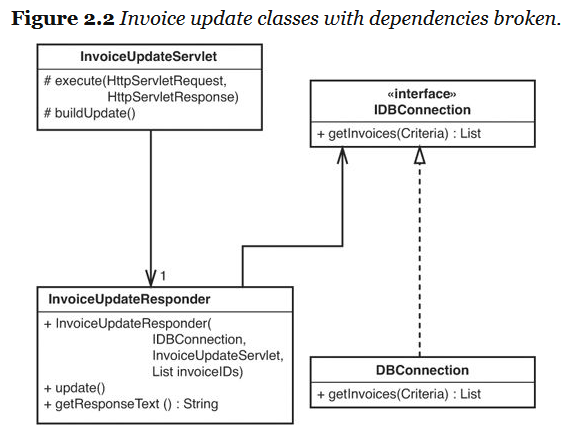
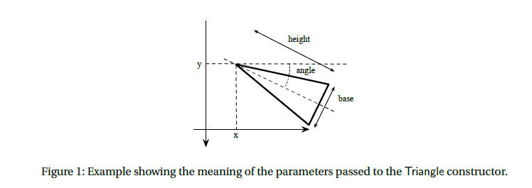
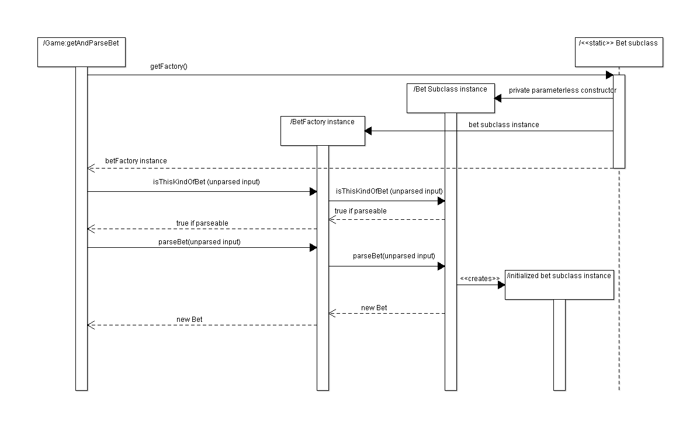

CSSE 375 Course Notes
Table of Contents
- 1. Week 1 : Getting things started
- 2. Week 2
- 3. Week 3
- 4. Week 4
- 5. Spring Break
- 6. Week 5: First largescale coding assignment Assignment
- 7. Week 6
- 8. Week 7
- 9. Week 8: Deployment & Configuration Management Assignment
- 10. Week 9
- 11. Week 10
- 12. Final Exam DUE
- 13. Stuff we didn't get to
- 13.1. Day 1: The final
- 13.2. Day 2: Parallel Class hierarchies
- 13.3. Day 3: Large scale refactoring (last chapter in refactoring book)
- 13.4. Day 4: ???
- 13.5. Day 2: Feathers Refactoring
- 13.6. Day 3: Effects Diagram
- 13.7. Day 1 & 2: One more large scale coding activity in class
- 13.8. Day 3: Exceptions Activity
- 13.9. Day 4: Exceptions 2
1 Week 1 : Getting things started
Begins
1.1 Day 1: Introduction
- Essential junior project logistics
- The registrar screwup
- Requirements
- Team 1
- Team 1 assignments
- ANDRIOD daveyle
- ANDRIOD johnsoaa
- ANDRIOD millerna
- ANDRIOD rockwotj
- ANDRIOD willisaj
- PLATFORM cartersm
- PLATFORM jenkinjk
- PLATFORM roccoma
- QA hullzr
- QA maderwc
- QA watersdr
- QA haloskzd
- QA liuj1
- WEB lashomjt
- WEB royappmj
- WEB cheungnj
- WEB hortoncb
- WEB mayja1
- iOS finkac
- iOS vanakema
- iOS thaimp
- iOS davidsac
- Features I suggest for Iteration 1
- Adding a "store" where you can buy trophies with points used for gamification
- Way to see other user's trophies
- Other things Mike & I talked about
- refactoring to unify api
- setup scripts, ci-framework
- gamification add prizes trophies
- image storage bucket
- uptime
- deployment
- Running on google cloud
- Agenda by Friday for meeting
- Team 1 assignments
- Team 2
- Team 2 assignments
- ANDRIOD mcnelljd
- ANDRIOD tombn
- ANDRIOD patterda
- BL jarvisoa
- BL taylorj7
- PLATFORM kassalje
- PLATFORM ryanjm
- QA chanand
- QA kanherp
- QA kochelmj
- WEB beyerpc
- WEB zengc
- WEB bollivga
- iOS enricotj
- iOS jungckjp
- iOS butlerjr
- iOS kittisj
- iOS carroljb
- Features I suggest for Iteration 1
- Monitoring around EIT banner data upload
- UI improvements & features for public beta
- Searching for classes more intelligently than in a giant list
- Proposed Features
- Issues with syncing with eit data, deleting. failed courses
- ui things
- undo
- 290 490 being distinct
- beta testing
- Team 2 assignments
- The registrar screwup
- The essential problem of maintenance
- Software doesn't age or wear out - so why do we need maintenance?
Basically, we need to keep making changes to "finished" code
- Because we need new features, big and small
- Because the technological context changes
- What is special about "maintenance" as opposed to 'ordinary' coding?
- Sins of the past
“For I, the LORD your God, am a jealous God, punishing the children for the sin of the fathers to the third and fourth generation…” –Deuteronomy 5:9
- Lost and incomplete information
Death or better career opportunities come swiftly to the only member of the team who understands critical system XXX.
- Changes degrade the system
The original design might have been cleanly designed and easy to understand.
But after several years of changes a lot of the abstractions have broken and it is much harder to understand and riskier to change
- Sins of the past
- The focus of this class
- How to sense (smell) when systems have problems
- How to review code and constructively point out problem areas
- How to incrementally restructure (refactor) code to clean it and prepare the way for new changes
- How to add tests to systems where tests were not originally included
- Software doesn't age or wear out - so why do we need maintenance?
- Introduce upcoming assignment: CalendarParse
- Small Group Discussion Activity
Read the readme: [Code/CalendarParse/readme.html] Look at the code: [Code/CalendarParse/src/CalendarParseMain.java]
What is wrong with this code?
How would you fix it?
- My major issues (no peeking)
- One big function - should be several classes
- No good way to automated test
- Need for duplication removal/abstraction in the parsing
- Potential for combintorial explosion
- Small Group Discussion Activity
- Setup needed for Day 2 Activity
You will need to checkout the FowlerVideo project from SVN. For that, you will need your SVN setup. Follow the instructions here:
1.2 Day 2: Fowler Video Store Example Activity
1.3 Project meeting
1.4 Day 3: What is a Refactoring?
Grant me the serenity to accept the code I cannot change, the courage to refactor the things I can, and the wisdom to know the difference. –My Twitter feed this morning
- Fowler's definition
Refactoring (noun) a change made to the internal structure of software to make it easier to understand and cheaper to modify without changing its observable behavior.
Refactor (verb) to restructure software by applying a series of refactorings without changing its observable behavior.
- Refactoring improves the design of code
When you know the design you want, it can safely get you there
- Refactoring makes code easier to understand
Early on I do [small refactorings that test my understanding]. As the code gets clearer, I find I can see things about the design I could not see before…Ralph Johnson describes these early refactorings as wiping the dirt off a window so you can see beyond.
:INSTRUCTOR: Discuss the idea of refactorings to clarify design.
Make the point that renaming, extracting methods, etc. increases your engagement with the code. And once refactoring, larger design changes can be revealed. :END:
- Refactoring makes you program faster
This is the final goal
- Better code = better speed
- Easy to forget when you get coder Stockholm syndrome
- Applies to refactorings that remove complexity as well
- Things that make refactoring difficult
- No tests (maybe you should write some?)
- Public interfaces
- Code ownership
- Database object mapping
- Refactoring and performance
In short, you are usually willing to sacrifice minor performance loss for gains in clarity
- Upfront design verses refactoring
Extreme programming tenant: simplest thing that could possibly work
Pros of Designing In Advance
- Your
- Cool
- Ideas
- Here
Pros of Designing As You Go
- Your
- Cool
- Ideas
- Here
:INSTRUCTOR: Look at the code for the CalendarParse assignment. Contrast high design upfront, verses writing it as is and then refactoring
Ask them to rank themselves on a scale 1 to 5 :END:
- My answer (no peeking)
Pros of Designing In Advance
- Faster (as long as you're right)
- Understand the problem more, think harder
- Maybe have a fancier design that is more expandable
Pros of Designing As You Go
- Get design ideas from the code
- Avoid unworkable designs
- Keep the code simpler
- The rule of 3s
- First time you do something, do it simply
- Second time, you grit your teeth but you deal with it being a little ugly
- 3rd time, you refactor till it's nice
- Indirection and the cost of design
Lets consider the humble case statement:
switch(type) { case REGULAR: //$2.00 for 2 day rental, and $1.50 for each additional day thisAmount += 2.0; if(rental.getDaysRented() > 2) thisAmount += (rental.getDaysRented() - 2) * 1.5; break; case NEW_RELEASE: //more code case CHILDRENS: //still more code }
When we replace it with polymorphism it looks something like like this:
double cost = rental.getMovieType().computeCost();
But the code to do the actual computation is always going to need to live somewhere. Why do we prefer one to another?
- My answer (no peeking)
In the polymorphic version we've made explicit an abstraction: MovieType
This abstraction uses indirection - a simple method call hides a multiplicity of possible functions.
This is a win if:
- This abstraction was used in a lot of places, therefore when we make it explicit it simplifies a lot of code
- As #1, but for the future (i.e. it simplifies code we will write in the future)
- This abstraction corresponds well to how we think about the problem, meaning it's in-line with expectation of other programmers
- This is a discussion of topics in Ch. 2 of Fowler Reading
Not required reading but you might find it edifying
1.5 CalendarParse DUE Assignment
- Step 1: Check out the assignment from SVN
Follow the instructions here: [how_to_checkout_repo.html]
- Step 2: Improve the design of the code
Details here: [Code/CalendarParse/readme.html]
- Grading
Grading guide here: [Code/CalendarParse/gradingPart1.html]
1.6 Read Chapter 3 of Refactoring DUE Reading
Especially focus on the ones we'll cover before the written assignment:
Comments, Feature Envy, Data Class, Divergent Change, Shotgun Surgery, Temporary Field, Refused Bequest, Parallel Class Hierarchies, Alternative Classes With Different Interfaces
2 Week 2
2.1 Day 1: Bad Smells 1 - Comments, Feature Envy, Data Class
- Why smells?
- Sort of a visceral feeling
- Not proof positive a design problem – just a hint that something might be amiss
- Smells guide refactoring
- I often just let smells guide me when I’m working on a system
- When a system is big and messy, smells let me clean up and clarify so that the “big design” can emerge
- Often I look for a single change that will improve several smells at once – maybe move a function into a Data Class and out of a Large Class
- Comments
Not all comments are bad. But if I see a method with a lot of internal comments - that's usually a bad sign
- But I really need a comment here!
Can you refactor the code so that it is obvious? If so, that is preferred
- Use function and variable names as documentation
//updates the current max m = val > m ? val : m;
verses
currentMax = val > currentMax ? val : currentMax;
- Don't use comments when they are not needed
average = average + 2; //adds two to the average
How would you interpret this?
average = average + 4; //adds two to the average
- But I really need a comment here!
- Feature Envy
When one block of code really likes using the methods and fields of a different class
otherObject.setMode(otherObject.CoordinateSystem.POLAR); double var1 = otherObject.getAngle(); double var2 = otherObject.getDistance(); otherObject.annotate("magnitude", Math.abs(var2));
…often can be moved to the "envied" class
- Data Class
Classes with nothing but getters and setters
public class Movie { public static enum Type { CHILDRENS, REGULAR, NEW_RELEASE}; private String title; private Type priceCode; public Movie(String title, Type priceCode) { this.title = title; this.priceCode = priceCode; } public Type getPriceCode() { return this.priceCode; } public void setPriceCode(Type incomingPriceCode) { this.priceCode = incomingPriceCode; } public String getTitle() { return this.title; } }…often can have real functionality added to them
- CommentsFeatureEnvyDataClass Activity
It's a package in your svn repos.
There are 3 packages. One has a problem with comments, one has a problem with feature envy, one has a problem with a data class.
2.2 Day 2: Bad Smells 2 - Change Preventers
- Divergent Change
When 2 different routine changes have to modify the same object for different reasons.
Say for example you've got a GameRender class, which handles rendering your cool video game. As a result, you frequently edit this class as you tweak and optimize the way rendering works.
BUT, imagine that also, the GameRender class contains a hard-coded config list of all game sprite images. So everytime you need to add a new sprite, you also add a line to that config value.
This suggests the class is maybe doing 2 different things and ought to be split into two classes (or maybe the config value should be in a file….whatever).
Not a super common one though.
- Shotgun Surgery Activity
This one on the other hand is very common. This is where to make a routine change you have to edit multiple places.
For example, take a look at this code which is designed to let you play Roulette where you can bet in various ways (e.g. on Red, Black, Odds, Evens, a Range of Numbers, etc.)
- Step 1: Now imagine you want to add a new kind of bet
How many files will you have to edit to make this change? Which files and where? I see at least 3
- Step 2: How could we design this code so that we can change as few files as possible?
Discuss it in small groups and make some UML.
- Step 3: Look at some of my solutions
Which do you like best? Why?
- Step 1: Now imagine you want to add a new kind of bet
2.4 Day 3: Bad Smells 3
- Note upcoming homework assignments
- Feather's Duplicated Code Example Activity
The code should be in your SVN repos, but you can also find it here: [Code/FeathersExample]
My final solution is here (but I'd recommend you just follow along in Feathers Ch 21): [Code/FeathersExampleSolution]
- This is Chapter 21 of Working With Legacy Code Reading
Not required reading, but if you found my discussion confusing or want to see the later steps it is worth checking out.
2.5 Bad Smells Written Assignment DUE Assignment
Maybe an analysis of CohortTable
Look on Moodle for the details.
2.6 Milestone 1 DUE Assignment
The goal of this milestone is mainly to get new teammates up to speed.
Therefore:
- Every team member must code a feature
- The features can be small, but should be non-trivial
- Document your features in the wiki or Trello, and add appropriate links & team assignments to the backlog google doc
2.7 Part of Chapter 7 of Refactoring Reading
Up to and including "Hide Delegate" but no further
3 Week 3
3.1 Day 1: Bad Smells 4
- Unborn Classes
- Primitive Obsession
Imagine that you work on some company's online webstore codebase.
This company has a unique product id for every product that looks like this: ABC-12345
Under what circumstances would you want a ProductId class? Not a Product class (maybe there is already several of those) but a ProductId class?
- Your
- Cool
- Ideas
- Here
- My Solution (no peeking!)
IN SHORT: I would have one if there was logical functions that could go there that don't make obvious sense elsewhere.
But, more explicitly:
- You get type safety, plus your types are explicit
- You can ensure validity with constructors
- You can potentially move useful functions there, and they are easy for folks to find
- You maybe can pull functions out of over-busy classes like Product
Cons:
More complicated, if it's really just a string
???: Things like storing and unstoring - there are pros and cons
- Data Clumps
double getDistance(double x1, double y1, double z1, double x2, double y2, double z2) {When you have data that is "clumped" into logical groupings.
Not a problem in a standalone place by itself, but oftentimes these clumps are repeated over and over.
Can simplify code to make a class, also maybe there are some methods that can go in that class.
But even a Data Class is sometimes preferable to a data clump.
- Long Parameter List
- Sometimes parameter lists are long because you have data clumps.
- Sometimes there's an object that encapsulates what you need
And your passing rather than just asking objects.
public boolean isProductValid(int id, String address, ArrayList<Suppliers> suppliers, Date createdDate, int regionCode) { //becomes public boolean isProductValid(Product p) { int id = p.getId(); String address = p.getAddress(); //etc //or even p.isValid();
- Math
Lots of parameters you're passing around for a calculation, maybe you need a Method Object. This is a somewhat obscure case, so I won't talk about it in detail here but check out Fowler's discussion in "Replace Method with Method Object" (pg. 135).
- Sometimes there's a unifying abstraction missing
public doGameTick(Hero hero, ArrayList<Tiles> tiles, ArrayList<Monster> monsters, ArrayList<Trap> traps, ArrayList<PowerUp> powerups, Renderer graphics, double timer, long score, ArrayList<LevelModifiers> modifiers, MusicGenerator music, KeyboardLayout keyboard)
What if we changed it to this? Would it be better?
public void doGameTick()
- My solution
Neither of these is a good thing, but I think it is more obviously bad in the second one. In that case it's clear that we're using global data and touching too much. But the first one - even if its not using global data - is really doing too much too.
Obviously, everything needs to happen in a game tick.
But within that we need some underlying abstraction that simplifies what's going on.
- My solution
- Sometimes parameter lists are long because you have data clumps.
- Primitive Obsession
- Problematic Classes
- Temporary Field

A field that exists only for part of an object's lifetime.
- Refused Bequest
When an object does not want everything it inherits from it's parent.
- Usually fine: object implements several of it's parents abstract methods as blank
- Slightly bad: object "zeros out" the methods of it's parent
- Very bad: methods on the parent do not make sense on the object
- Classic interview question Activity
Say you want to have a filesystem with files and directories.
- Files need methods to get contents
- Directories need methods to get lists of files/subdirectories
- Both files and directories need methods to get size, delete, etc.

Should File inherit from Directory or should Directory inherit from File?
Discuss in groups and we will vote.
- File should be the superclass of directory
- Directory should be the superclass of File
- Neither of these…and if so, what is the alternative?
- Temporary Field
3.2 Day 2: In-class refactoring 1 Activity
Let's practice a bit. You'll want to be in pairs for this activity (not triads, not by yourself).
See the details here: [Code/CoursesExample/readme.html]
3.3 Project meeting
Just a day for meeting with the teams you need to meet with!
I'm here to help if you need me - but otherwise I'm going to let you work!
BUT, please work on the project and not CalendarParse or other classwork unless you a finished with your contribution.
3.4 Day 3: Bad Smells 5 - Speculative generality and others
- Message Chains
Why is this potentially undesirable?
if(model.getUser(userId).getAddress().getCountry() == Country.USA) {Basically:
- It means a lot of dependency between the caller and the objects in the chain
- Oftentimes it means the early objects in the chain don't have the right interface
- We might even be doing something really sketchy
Better:
if(getUser().isInTheUS()) { - Middle Man
 Looking at a system like this, one might be inclined to ask:
- Should we add a method getOrder(int orderNumber) to OrderHistory?
- Should OrderHistory exist at all in the first place?
A. Situations where your would keep OrderHistory but add a getOrder method, maybe removing several methods from OrderHistory:
- Your ideas here
B. Situations where you would remove OrderHistory entirely, adding instead a getOrders to User:
- Your ideas here
C. Situations where you would keep things as they are:
- Your ideas here
- My solution (no peeking!)
A. I would do this is OrderHistory has a bunch of methods that act on the whole history, but also some methods that are just specific to orders.
B. If OrderHistory just always delegates to Order
Or if all the methods of OrderHistory can be migrated to User because User is not too large.
C. I wanted to isolate my clients from the existance of the Order object.
Or if the majority of methods in OrderHistory are not just delegation to Order, so I can keep the client interface simpler by just not having to talk about Order.
- Parallel Class Hierarchies

- How can we solve the issue in this image?
- My solution (no peeking!)
Never an easy thing. The basic idea is there is some abstraction necessary - some sort of way to have either a generic Model Object or a Generic view object that will accomplish the task.
E.g. maybe a config language that let's us build a GUI automatically from a Model Or a DB layer that let's us make the model objects just be dumb data holders
Not even always possible but potentially worth thinking about
- Another one

- How can we solve the issue in this image?
- Speculative Generality
What makes generality speculative?
Consider this:
When you want to make a button invoke a particular action in Java, what you generally do is make a new class that implements the ActionListener interface, then you register that listener with the button. Like this:
JButton button = new JButton("Press me!"); ActionListener myListener = new NewClassIMade(); button.addActionListener(myListener); panel.add(button);
But you could also implement this using straightforward classes. There could be just an button class with a method onClick() than can be overriden (or maybe is abstract). Then the code would be simpler and not rely on any fancy patterns.
JButton button = new NewClassIMade("Press me!"); panel.add(button);
Why is this not speculative generality?
Answer in groups of 2-3. HINT: I think this is a slightly tougher question than it might initially seem to be.
- My solution (no peeking!)
I hesitate to call this a solution because it really is an interesting issue.
My answer would probably be that decouples two complex hierarchies - the hierarchy of GUI elements and the hierarchy of your individual code and whatever event handling it might do. This allows many good things:
- New GUI objects can be created, and switched out pretty seamlessly
- One object can be a listener for many different things, plus you can do crazy stuff with your own inheritance hierarchy if you wish
- Your class isn't polluted with random methods and fields that are specific to the GUI - similarly GUI classes don't need to worry about you accidentally overriding some critical method
- Do you need those cool features in your observer code?
Be honest
- My solution (no peeking!)
- When should I be general and when should I be simple?
Kent Beck's rules, which I think are pretty good:
You want code that (in priority order):
- passes its tests
- minimizes duplication
- reveals its intent
- has fewer classes/modules/packages…
- Some further reading for those who are interested
Two very nice articles that argue that this is literally all you need for design are here:
http://www.jbrains.ca/permalink/the-four-elements-of-simple-design
- Can we apply these rules to our observer conundrum above?
- General takeaway
- Simplicity is usually best - you only need the fancy solutions on pretty hard problems
- BUT when you do run into a pretty hard problem, you are really glad you have the "big guns". So learning complex abstractions and ideas (e.g. patterns) is very valuable, even if you only use them occasionally.
3.5 CalendarParse Part 2 DUE Assignment
See details here: [Code/CalendarParse/part2.html]
4 Week 4
4.1 Day 1: Smells Exam
See the study guide here: [smellsExamPratice/howToStudy.html]
4.2 Day 2: In-class refactoring 2
Continue to work on the refactoring from last week.
No peeking until the right time, but if you like, my solution is here:
4.3 Project meeting
Note that we'll be doing a formal presentation to Mike/Matt next Monday.
We need to make an agenda for that.
4.4 Day 3: 100 Ways to improve your programs with refactoring
One of things I really like about refactoring is how serious Fowler is about improving the clarity of his code. Recall Kent Beck's design rules:
You want code that (in priority order):
- passes its tests
- minimizes duplication
- reveals its intent
- has fewer classes/modules/packages…
Oftentimes to do #3 you might have to do some very serious refactorings. But other times, you can greatly improve the design of code in many small ways.
- Decompose Conditional
When you have a complicated conditional expression…
if(date.before (SUMMER_START) || date.after(SUMMER_END)) charge = quantity * _winterRate + _winterServiceCharge; else charge = quantity * _summerRate;
BECOMES
if (notSummer(date)) charge = winterCharge(quantity); else charge = summerCharge (quantity);
Basic idea here is that you can create 3 new methods:
- One for the complex conditional
- One for the "if part"
- One for the else part
This can all be accomplished using 3 simple "extract methods" in Eclipse.
- Consolidate Conditional Expression
When you have a sequence of conditional test with the same result…
double disabilityAmount() { if (_seniority < 2) return 0; if (_monthsDisabled > 12) return 0; if (_isPartTime) return 0; // compute the disability amount
BECOMES
double disabilityAmount() { if (isNotEligableForDisability()) return 0; // compute the disability amount
Combine all the situations that produce the same result and extract it
- Remove control flag
boolean found = false; while(!found) { // code // code if(current.equals(target)) { //code found = true; //ends the loop } }
BECOMES
while(true) { // code // code if(current.equals(target)) { //code break; } }
Replace control flags with break or (especially) return.
- Replace Nested Conditional with Guard Clauses
double getPayAmount() { double result; if (_isDead) result = deadAmount(); else { if (_isSeparated) result = separatedAmount(); else { if (_isRetired) result = retiredAmount(); else result = normalPayAmount(); }; } return result; }; //BECOMES double getPayAmount() { if (_isDead) return deadAmount(); if (_isSeparated) return separatedAmount(); if (_isRetired) return retiredAmount(); return normalPayAmount(); // <-- could even INLINE this sucker }
The key to realize here that an if/else clause applies equal conceptual weight to both clauses. BUT oftentimes one of the clauses is an obscure edge case - not usually part of execution.
If something is an edge case – hide it's implementation with an extracted method and just return out of the whole function.
This might seem obscure but it's not. Take a look at the first example above. See how the call to normalPayAmount() seems really obscure (an else's else's else)? What if 99% of your people were actually that case.
- Replace Conditional with Polymorphism
double getSpeed() { switch (_type) { case EUROPEAN: return getBaseSpeed(); case AFRICAN: return getBaseSpeed() - getLoadFactor() *_numberOfCoconuts; case NORWEGIAN_BLUE: return (_isNailed) ? 0 : getBaseSpeed(_voltage); } throw new RuntimeException ("Should be unreachable"); }
BECOMES

- When might you NOT want to do this?
This is definitely one of the places that I think OO-orthodoxy conflicts with style of other language paradigms in that a lot of OO people would REALLY hate a case statement like this.
Let me put it thus way…I think the most likely candidate for a polymorphic refactoring is when:
- This case statement occurs in multiple places in your code
- You expect to add new types to this case statement
If both of these things are true, I think anyone would agree a common abstraction is necessary - and in OO subclassing is a likely choice.
Even without 1 and 2, I would think hard about it because there may be an abstraction here trying to be born. Could other code use those subclasses somehow - is there functionality that could migrate there?
But if 1 and 2 are false and I don't see a good abstraction - I have written a case statement or two in my days.
- When might you NOT want to do this?
- Delegation and Inheritance
Read/Skim this:
- When should you use delegation, when should you use inheritance?
Note one thing I want you take away from this is that refactorings often oppose each other.
BUT on to the main point:
- This is actually the observer/inheritance debate I brought up with regard to java a few days ago with regard to speculative generality
- As before, the key benefit of using delegation is separating two class's interfaces and inheritance hierarchies.
- The main downside is the annoyance/complexity of the delegation
There are other prototype based OO languages like Self and Lua which really blur the line between these two options, and use it to get inheritance-like behavior with much simpler rules.
- When should you use delegation, when should you use inheritance?
- Plus Delta
I am trying a lot of things with this course.
- I am making it a little more coding-oriented and a little less lecture-oriented
- I am trying to keep the project as important but not overwhelm the class with just project work
- I am trying to use fewer slides, with more class discussion and have course notes (with solutions) readily available to you
Your feedback is very important! Plus Delta on Moodle!
4.5 Milestone 2 DUE
4.6 Medical Data Refactoring DUE Assignment
See details here: [Code/MedicalDataRefactoring/readme.html]
5 Spring Break
Woo!
6 Week 5: First largescale coding assignment Assignment
6.1 Project meeting/Milestone Demo
6.2 Day 1 & 2: ArgoUML Assignment DUE
Key tricks for navigating a large codebase
- Grep/search
- Find declaration/references
- Setting breakpoints
6.3 Feathers Ch. 9 Reading
6.4 Day 3: Working With Legacy Code
- Logistics
- Reminder: Please meet with your teams and make sure Google Docs/Trello is updated for next iteration by monday
- Reminder: Finish ArgoUML and bring code in demoable state Monday
- What is legacy code?
What do you think of when you hear the phrase "legacy code"?
- Been around a while - needs to changed
- Guy who wrote it is gone
- Bad style!! /\documentation
- Uses outdated/deprecated technology
- No longer meets "the standards"
- Old language
- Feathers's Point of View
"Code without tests is bad code. It doesn’t matter how well written it is; it doesn’t matter how pretty or object oriented or well encapsulated it is. With tests, we can change the behavior of our code quickly and verifiably. Without them, we don’t really know if our code is getting better or worse."
- Feathers, preface
Do you agree?
- Your tests are probably bad
Are your tests?
- Difficult/time consuming to run
- Break for reasons unrelated to your code (that is, they break if the database or internet is down, or because your “test file” has changed)
- Test a small fraction of your overall code
- Test most of it indirectly (i.e. big tests that test the whole system end-to-end rather than testing individual small functions)
Tests of this sort generally don’t tell you anything you couldn’t get by just running the code directly
- Most of the tests I have written have been like this
- What is a good unit test?
- Small test that focuses on a small section of the code
- Does not depend on the database, internet, writing/reading files
- Directly inspects the output (i.e. does not rely on `proxy’ measures like number of elements or lack of an exception)
- Runs instantly with the push of a button and finishes in less than 1/10th of a second
- Back to Feather's point of view
Edit and Pray
- How most changes to legacy code happen in the real world
- Smart developers fight against this by testing by hand or building specialized test tools
- Smart developers also refuse to doubt their ability to understand, make changes, and improve the codebase
- BUT, as systems grow larger and folks leave BIG SYSTEM PARANOIA sets in. This is the death rattle of a software project.
- What can we do, Michael Feathers?
Have rigorous unit testing for your code, then you can make changes with confidence!
This is (probably) true if…
- You adopt Feather's very rigorous idea of what unit testing ought to be like
- You are writing your code from scratch
#2 never happens and the previous devs never did #1
Is Michael Feather's just complaining about the obvious?
- Except…
Feathers thinks you can add unit tests to an existing system.
With techniques…secret ninja techniques.
- Why is adding tests to an existing system hard?
An example
[]
Groups of 3. Imagine that we were changing getResponseText and getValue…so we want to test them. What about these classes suggests that testing might be a problem?
- Your
- Ideas
- Here
- Feathers answer
Complete details on page 15, but in short:
- Invoice looks ok (although hard to be sure it doesn't have secret stuff like globals going on)
- DBConnection & InvoiceUpdateServelt both look like a pain to construct, and they both are needed to construct InvoiceUpdateResponder
- What might you do here?
- Your
- Ideas
- Here
- Feather's answer
[]
- Examine dependency on Servlet and figure out it actually only depended on a list of invoice ids, make that the parameter instead
- Replace DBConnection with an (identical) interface - that lets us switch out a fake one at test time
- Dilemma
When we change code, we should have tests in place. To put tests in place, we often have to change code.
- Usually we need to be conservative
- This can come at the cost of pretty design (thought not always as in the system above)
- Feathers compares this ugliness to scars left by a surgery: not a
great thing but generally better than alternatives:
- Leave the code untested, and therefore unsafe to modify
- Do a complete re-design, at massive risk
- What we will be working on
Techniques to allow us to insert tests into existing code
Generally they will be tricky - using indirection to allow large changes with very minimal modification to the existing system
7 Week 6
7.1 Day 1: Feathers Ch. 9 - Part 1
We're going to go through the following sections of Chapter 9, following along from the book:
The Case of the Irritating Parameter The Case of the Hidden Dependency The Case of the Irritating Global Dependency
Then I'm going to ask you to practice these techniques on some example code. It should be available in your svn repos, but if not it's here:
When you're finished you can see my solution here:
7.2 Day 2: Feathers Ch. 9 - Part 2
One major technique today: Subclass and Override Method. We're going to look at 2 of Feather's examples:
The Case of the Aliased Parameter The Case of the Undetectable Side Effect
Then we'll practice this technique on some example code (should be in your svn repos):
This code is designed to draw a (rotated) triangle. The way the constructor parameters interact is displayed here:
[]
When you're finished you can see my solution here:
7.3 Project meeting
7.4 Day 3: More Feathers Dependency Breaking Techniques
- Seams
int someMethod() { //code badMethod(); //still more code } //almost anywhere else void badMethod() { // code we'd rather not run in test }How can we change THE REST OF THE UNIVERSE such that someMethod will run, but not run the code in BadMethod.
- In some languages you can override the global
- Subclass and Override Method
- Abuse the preprocessor
- Use the linker
- Some methods that use some interesting seams
- Link Substitution
Use the linker to change the contents of functions in C
Can also be used by editing the classpath in Java
Demo working Link Substitution in Eclipse
Page 377
- Pull Up Feature
- Make an abstract superclass that contains the "cluster" of methods you care about
- Make all other methods you need abstract
- Make a test specific subclass of the class for testing
- Text Redefinition
Use the evil magic of interpreted languages to change whatever you don't like!
- Link Substitution
- Some methods where you have to make seams
- Sprout Method
- When you need to add some code but you can't get the whole system under test
- Page 59
- Adapt Parameter
- Useful when you can't use extract interface because you can't modify the parameter class (e.g. it's a library class)
- The Adapter pattern from GOF
- Potentially a pain…but maybe even a design improvement
- Page 326
- Expose Static Method
- Take a non-static method and make it static
- Useful for testing heavy calculating methods
- Only works in limited circumstances (what are they?)
- What if you can't make a long calculating method static?
Because they use fields
…why not "Break out a method object"?
- Break Out a Method Object
- What is a method object?
- An object that represents a particular calculation
- Fowler mentions it as a way of refactoring code that takes a ton of parameters
- Has sub-methods that describe the calculation
- Data is passed between the sub-methods mostly as fields
- Feathers thinks this can be useful for testing too
See page 330
- Encapsulate Global References
I personally like starting with the second example on page 342
- Sprout Method
7.5 BORG Email Feathers Assignment DUE Assignment
8 Week 7
8.1 Day 1: Good software writing 1 Activity
Get in teams of 4-5 & move to sit with your team. You'll likely need some paper and laptops.
- Your task
You job is to document how the system here allows new types of Bets to be added easily:
[Code/Roulette/Roulette_ExternalFactory/src/roulette]
Here are the rules:
- You may only work on this for 1 class period. You will turn in stapled stack of sheets to me at the end of class
- Diagrams must be drawn by hand (not made using a tool)
- Words may be written by hand or with an editor, but you must print them out physically and hand them to me
The best team submission will receive bragging rights, and maybe a prize.
Best means:
- Clearly explains how the system works
- If several team implement #1, whichever is shortest to read
One or two short clear pages is better than a huge pile of crap
8.2 Project Work Day
- Please ensure you can build the Feather's assignment on your local computer!
- Otherwise work with your teams
8.3 Day 2: Good software writing 2
Please get in your same groups of 4-5 from Monday's class
- Activity
- I'll hand out one of the documents from the other class
- I'd like you to critique it
- Make a list of the top 2-4 things you don't like about it
- Don't talk about bad handwriting - obviously this was made under time constraints
- You have 5 minutes to make your list
- Major issues your class found
- Your Ideas Here
- Too verbose
- Example not good
- Disorganized: Figuring out how things linked together
- Didn't explain - more just steps
- Vague on steps
- Too succinct !
- No reasoning or explanation
- What the other class said about you
- Not enough detail about why you needed to do stuff
- No explaination of BetFactory
- BetOption not explained but in the diagram
- Incorrect statement
- Never talked about private parameterless constructor
- Too long got confusing
- Too verbose - 2 examples
- Split of steps from explainations unnecessary
- Buffalo's critique of your writing
Overall pretty good
- BEST: Most of you thought about your audience
Included explicit instructions for the common case
- Good: Some of you used a worked example
This can be an excellent approach, not usually used enough
- Good: Your all omitted unnecessary detail from your diagrams
- Always necessary
- Some folks omitted a little too much
- Learn the 3 UML lines you ought to know
- Putting notes on your diagram is a good thing, but keep it focused
- WORST: tended to shy away from the really complicated part
- In this case it was how Bets could be constructed using the external factory
- Do not trust your instincts
- Start with the hardest part
- Bad: Use code when you can
- Bad: Class Diagram is not the only kind of diagram
[]
- BEST: Most of you thought about your audience
- A final note: keeping things updated
- Out of date documentation is worse than nothing
- Wikis is a common solution (imperfect, but generally better than alternatives)
- Always have a very small amount of very good documentation
- Integrate your documentation into your unit testing framework if you can
8.4 Day 3: Deployment & Configuration Management 1
- Software is an ecosystem
Before it can run, most software products need
- Its raw code
- Flat data or configuration files in the right places
- Any libraries it depends on, installed correctly and at the right versions
- A variety of external supporting executables: monitoring scripts, data pulling processes, installers updaters and uninstallers, services or utilities that must run the background
- To be installed correctly within the OS itself - added to the path or to the correct menus, associated with the right file types, have all the necessary background stuff set to run on startup
How does this stuff get setup?
- My first IT Job
I was responsible for configuring computers in a college that had a custom in-house developed app. To install that app, I followed a 7 page printed document that included installing a variety of other software systems (e.g. Filemaker Pro - a sort of database) and even explicitly replacing a dll in a specific windows directory.
What is the drawbacks of this system?
- My first IT Job Part 2
Then eventually we made an "image" of a harddrive with this custom software installed. I would boot in a special way, overrwrite all the data on the target system harddrive, and the system would be configured identically to the image.
What are the drawbacks of this approach?
- apt-get - a package system
Maintains a repository of "packages" (i.e. software plus carefully designed build/install scripts)
Knows about dependencies between packages
When you ask to install one package (i.e. apache) it figures out what it needs to install and installs what you want plus everything it needs to run (insofar as package dependencies are concerned anyway)
Packages are carefully maintained for security (that's both pro and con)
Packages can be automatically upgraded piecemeal (that's both pro and con)
Similar systems exist for many other languages/systems (e.g. Haskell, ruby, emacs, other flavors of linux)
Disadvantages:
- can be quite complicated to create a package
- running multiple package systems gets complicated fast and no system is really universal
- not really designed for things like configs
- only one version of each thing can be installed per host
- Docker
Lightweight "containers" that are supposed to act like super-low overhead images
Built by running commands on a "base image" makes them pretty portable
You can run many of these per host, and they don't interfere with each other
- Docker cons?
- For next class:
- Install VMWare (available on Banner software)
- Download and install the image file on Moodle
8.5 Milestone 3 Assignment
Submitted as usual
9 Week 8: Deployment & Configuration Management Assignment
9.1 Day 1
9.2 Day 4
- Testing your Docker image
Prepare by getting your zipping up your Dockerfile and associated configs. Be sure to name your directory something unique!
mv DockerPostfix hewner-DockerSolution zip -r hewner.zip hewner-DockerSolution
Also be sure that your docker has comment in it that explains the run command you wish the tester to use!
Then fill out the form!
- Steps for running your partner's docker
- Unzip the file the send you
- Edit the code so that it sends to your email address
- Do a docker build
- Look in the Dockerfile to find the run command they want you to use
- run the docker using the given run command
- Visit localhost:8888 on your host system and make sure apache is running
- Hit localhost:8888/nonExistantFile.txt to generate a 404 (5 times)
- Wait and minute and see if you get an email
- If you do: 10/10
- Otherwise investigate and figure out the grade they should get
- Fill out the form
- The Final Project Demo Monday
1 very quick demo from each group Organized however you wish but make a list
9.3 Docker Example: Getting Postfix Configured
9.4 Docker Assignment DUE IN CLASS
[Code/DockerPostfix/webpageAndMonitoring.html]
Actually, the final deadline will be Midnight on . But we will do an activity with everyone's images on Friday, so if you can have them done by then it would be better.
10 Week 9
10.1 Day 1: Final Project Demo
10.2 Day 2: Software Configuration Management
- What is Software Configuration Management
Definition: Set of management disciplines within the software engineering process to develop and maintain the integrity of a baseline.
- What is a baseline?
A standardized, deployable version of your software + all the associated bells and whistles to make it run.
- Your Dockerfile is like a baseline
Imagine that it also checked out a bunch of html + javascript from your company's source control (at a very specific version or branch)
Also imagine that it specified highly specific versions of every package that you checked out
- As you see, there's a LOT more to what makes a working system than just CODE
Ecosystem, blah blah blah
- You could store that Dockerfile in source control
Now you can always go back to an old version of your server configuration, which will include everything:
- Config files
- Startup scripts that startup all the appropriate daemons
- Exact versions of every library you depend on
- The source code that goes with this
- A baseline is just a "complete" state of the system
I say complete here, as opposed to the partial view that you get when you just consider the source code by itself
- Consistency is the goal of baselines
It’s 4:59pm on a Friday. You get a call…a customer who is using a 1 year old version of your software just called with a big problem. Luckily you can easy see how the code can be fixed with a one line change.
- Can you get the exact version of the code that your customer’s one year old version of the software was built with?
- If you can, can you rebuild it using the exact same libraries, compiler versions, and build scripts that it was originally built on
- If you can, can you repackage all the config files, documentation, etc. etc. exactly they way they were one year ago and get the customer a install CD just like the one they got last year (plus one tiny code change)
- Ok, with that all said - what is Software Configuration Management?
Definition: Set of management disciplines within the software engineering process to develop and maintain the integrity of a baseline.
That is, basically, who controls what goes in the baseline? e.g. Who gets to decide what goes in the Dockerfile?
- In early stages of development, usually there are no rules
People might be even just developing straight on their desktops in a non-repeatable way
Or even if there is a baseline, anybody can add a new library or daemon
- As the project nears launch, there is a desire to "freeze" the baseline
- Restrict the code changes
- Especially restrict changes to daemons and shared libraries
- This is where you have a software configuration management committee that must approve all changes BUT this is only one approach
- In agile approaches…
How do they solve this problem
- My answer (no peeking!)
- Use automating (like docker) to make the creation of the baseline automated and frequent (continuous integration)
- Use automated testing to ensure changes to the baseline didn't break anything
- The goal here is that we can reduce the need to freeze, shortening the path between customer need and final deployment BUT still not have unstable baselines
- One of the main areas that actual technology can solve what is often considered a social problem
- My answer (no peeking!)
- Deciding on a Software Configuration Management policy is hugely important
If your policy is too lenient, untested changes can be inserted that break everyone's working environment or introduce customer-facing bugs.
If your policy is too restrictive, adding features becomes much harder and your team becomes less responsive to customers
- Why is it so important to maintain the integrity of the baseline?
- Identification – You need to know what exactly is in your baseline.
- Consistency – often parts of the baseline depend on each other. If they get out of sync, code can fail.
- Management – Someone is responsible for deciding what changes are in/out. That process needs to be clear.
- Auditing – You need to know who did what and when.
- A frequent choice
- Anybody can change the state of the system in source control
- Baselines are "cut" at regular times (e.g. every Monday at 8am), those include any-and-all changes
- QA then tests the baseline
- Bugfixes can modify the baseline but additional features need super-special approval
- A "release candidate" is cut that is the baseline + all bugfixes
- QA retests the release candidate…hopefully finding no bugs
- The release candidate is released to customers
- Let me close by saying, the example you did as a class project was a simple case
In real (larger) systems, you have to think about:
- More complicated building including issues of binary compatibility
- Multiple server types (e.g. monitoring server, webserver, processing server), and multiple configurations (e.g. development, staging, production)
- Configuring external factors like routers and in something like docker the config of the host machine
10.3 Day 3: Exceptions
- The basics of Exceptions
try { throw new ExceptionClass(“Some data”) } catch (OtherExceptionClass e) { //if OtherExceptionClass is the same as //ExceptionClass (or one if it’s superclasses) //we go here. Otherwise the exception continues // to the next try…perhaps outside of this function dealWithException(e.getData()); }
An uncaught exception can easily end your program.
- Points I want to cover
- An exception is generated from a throw statement, which is passed an exception (in Java, a class that implements the Throwable interface)
- If it not within a try block, it ends the current function
(without returning) and acts like a throw in the next function up
the static.
In short, it just keeps ending functions up the stack until it encounters an enclosing a try/catch
- If the type of exception thrown matches the catch, the exception becomes a parameter to the catch and is "handled" (i.e. execution continues normally from there). Ensure that whatever your catch does really handles the exception, or re-throws if the system is not in a good state.
- If the type of exception does not match the catch, the exception continues looking for the nearest enclosing try block on the stack
- If nothing catches the exception, the program is aborted and a stack trace is printed
- Points I want to cover
- Consolidating Error Handling
The use of exceptions improves your code by consolidating error handling.
Here's some code without exceptions (result == -1 is an error result).
int result1 = getData(); if(result1 != -1) { result2 = processData(result1); if(result2 != -1) { displayData(result2); return; } else { System.err.println(“Error processing data”); return; } else { System.err.println(“Error getting data”); }
- Same Code With Exceptions
try { int result1 = getData(); result2 = processData(result1); displayData(result3); } catch (ProcessingException e) { //let the functions themselves //decide what to display in their //error System.err.println(e); }
- Don't do this #1
try { callFunction(); } catch (CatastrophicException e) { e.printStackTrace(); //just continuing on, maybe hiding this //error with later code, corrupting data //files } return;
- Don't do this #2
try { callFunction1(); } catch (ProcessingException e) { e.printStackTrace(); return false; } try { callFunction2(); } catch (ProcessingException e) { e.printStackTrace(); return false; } - Moving up the call hierarchy
The use of exceptions improves your code by making it easy to move up the call hierarchy.
For example:
- In main, we request the user enter a file name. We take the name give and call process file.
- In process file, we open the file and call doXMLParse
- In doXMLParse we break the file into events. For each even we call parseEvent
- parseEvent we get the date string out of the event XML. Then we pass it to parseDate
- In parseDate, we discover that that date string is malformed. ERROR!
- Put data in your exceptions!
The use of exceptions improves your code by allowing you to report relevant data in your exception.
Put everything you can think of in an exception
If there is a parsing error, I want to know
- What line of the data file the error occurred on
- What the problematic text was
If I was “expecting” something – what was I expecting
If there is an SQL error writing to the database, I want to know
- The SQL I was trying to execute
If there was an network error
- The URL I was trying to read from
DO NOT hesitate to write your own exception classes!
- Fail our retry? (Do Not Do This #3)
- Some things are unreliable: a network connection – maybe it makes sense try again in a half second (but don’t get caught in an infinite loop)
- Sometimes you can ignore a problem in a small part and still get 95% of what you need done
- Often a retry is possible but the point of failure is not the place for a retry – throw and let the proper place catch
- DO NOT let your code just return bad data and move the problem to someplace that’s harder to debug. Fail.
- DO NOT do a retry without logging the problem
- DO NOT accept that your code will frequently print meaningless error messages or other garbage (TERRIBLE STYLE – DO NOT DO THIS #3)
- Do Not Do This #4
try { parse1(); parse2(); parse3(); } catch (Exception e) { //this code is a lie System.err.println(“Error parsing”); }
- Checked or Unchecked Exceptions
A common java function header:
public int read() throws java.io.IOException;
Do you like this? Let's vote:
- I like that functions have to declare what Exceptions they throw, it helps me write safer code. I can live with the fact that I might have to add a "throws" declaration to many of my own functions.
- I hate adding throws declarations to all my functions! I'm fine with the fact that an unexpected exception type could abort my whole program.
- I feel like another compromise is possible here.
- Runtime Exceptions
When you have an unlikely error that you don't want to declare in a throws.
if(db.isNotConnected()) { //This would be super bizarre throw new RuntimeException(“DB is not connected in function closeDB. What is up?”); }
Also when you want to convert from a checked throw to an unchecked throw.
- Finally
try { file.open(); //seriously this must be closed doABunchMoreStuff(file); } finally { // runs regardless of any exceptions that might // be thrown file.close(); }
Try with Resources is a new feature in Java 7 that does a similar thing
- Summary
- Use exceptions to put error handling in the place where it belongs. Often, that means putting it very close to the user.
- Always document everything you can (easily) in an exception
- Prefer throw to returning a bogus value, especially one like null that can cause problems elsewhere
- Know about runtime exceptions when you need quick & dirty “the world has exploded” exceptions
- Don’t be shy about throwing or defining your own exception types
10.4 Day 4: Exception Activity
Go here [Code/ExceptionExample/readme.html]
The code should be in your SVN repos.
If you get stuck you can also peek at my solution here:
11 Week 10
11.1 Day 1: One more large-scale coding activity
This activity was a previous CSSE375 final exam. It's already in your SVN.
11.2 Day 2: Continuing with CleanSheets
We'll work on cleansheets in class and I'll talk about my solution.
You can see the full source for my solution here: [Code/CleanSheetsSolution]
11.3 Day 3: The final summary
- Bad Smells and Refactoring
- Largescale coding
- Don't get intimidated
- Don't try to understand the whole thing
- Test as yoy go, verify your understanding
- Use your tools like search and refactoring
- Writing Unit Tests for Legacy Systems
- Before making a dangerous change, get it under test
- Which is hard, but you can do it
- Look for "seams" in the language that let you change what code is executed
- In OO languages - Extract Interface and Extract and Override Method get you far
- Configuration Management
- Understand how your system is built - in total - could be tricky
- Make sure it's automated and repeatable
- Course Evaluations
- I treat your feedback very seriously
- Your feedback is also read by the Department Head and as part of my yearly performance reviews
- I tried to respond to your +Delta from last time
- This is a different version of the course: more coding activities, less lecture on SE theory
- A few highlights of the Final Exam
- NO CLASS FRIDAY
I will be in my office if you need help on the exam
12 Final Exam DUE
13 Stuff we didn't get to
13.1 Day 1: The final
13.2 Day 2: Parallel Class hierarchies
13.3 Day 3: Large scale refactoring (last chapter in refactoring book)
13.4 Day 4: ???
13.5 Day 2: Feathers Refactoring
13.6 Day 3: Effects Diagram
13.7 Day 1 & 2: One more large scale coding activity in class
13.8 Day 3: Exceptions Activity
Perhaps a file backup utility
- given an manifest file
- which has a list of files and manifest files, and backup locations
Rules
- files in manifest should exist
- directories in backup location should exist
- files in backup location should NOT exist
- no loops in includes